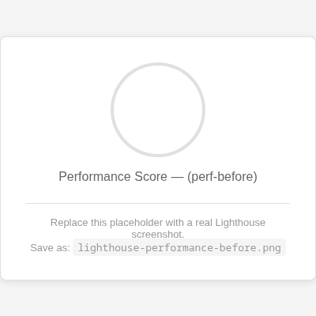
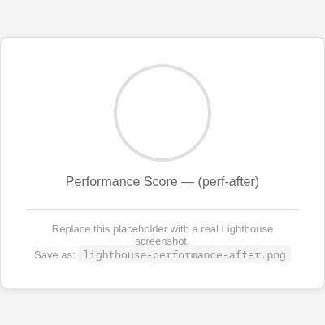
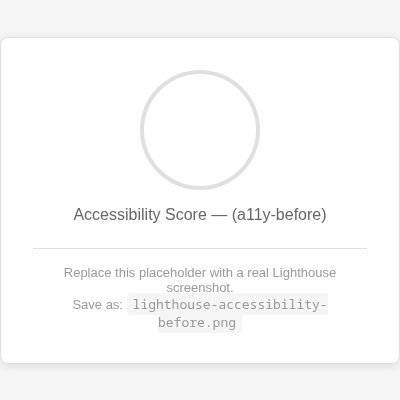
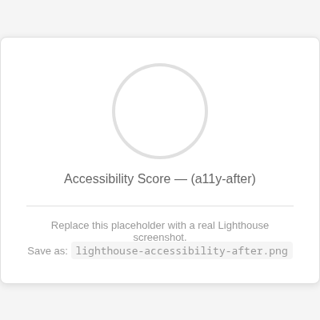

Week 9 — Lighthouse Audits
This week is about measuring and fixing real site quality with Google Lighthouse: a performance audit of my personal site (compress images, lazy load, defer scripts, cache assets) and an accessibility audit of my course project (contrast, alt text, skip links, keyboard focus). For each audit I screenshot the score before, apply the fixes, then screenshot the score after — that’s what gets submitted.
What the slides cover
Week 9 brings together two lectures: Web Performance Optimization and Web Accessibility (A11y). Both end with the same assignment shape: run Lighthouse, screenshot, fix at least three things, re-run, screenshot again.
Performance (Week 7 slides)
Why performance matters (53% of mobile users leave after
3 seconds), Lighthouse’s five audit categories, Core Web
Vitals (LCP, FID, CLS), image formats (WebP, SVG),
loading="lazy", minification,
defer, CDNs, cache headers, and a
10-point performance checklist — aim for
Lighthouse Performance 90+.
Accessibility (A11y slides)
WCAG 2.1 Level AA (target for this course), semantic HTML
over div soup, <button> over
<div onclick>, useful alt text
(alt="" for decorative), ARIA used sparingly,
keyboard navigation, color contrast 4.5:1 for body text,
skip links, and a 95/100 accessibility target.
Homework 1 — Performance audit
From the Performance slides’ Summary & Homework: optimize your personal site and post the result to your page.
- Run Lighthouse (Performance only) and screenshot your Performance score.
- Apply at least 3 optimizations from the lecture.
- Re-run Lighthouse and screenshot the new score.
- Post both screenshots with a 2-sentence description of what changed.
Before → After
Performance score: ? → ?


- Run Chrome DevTools → Lighthouse → check “Performance” only → Analyze page load.
- Save the initial score as
img/lighthouse-performance-before.png. - Apply ≥ 3 optimizations (WebP images,
loading="lazy"below the fold,width+heightonimg,deferon scripts, minified CSS/JS, cache headers). - Save the improved score as
img/lighthouse-performance-after.png.
Placeholder score cards are in place — replace them with your real Lighthouse screenshots once you’ve run the audit.
Submission: both screenshots posted to your page with a 2-sentence description of what you changed. Submission page: kahlen2008.github.io/webprogramming/week 9/week 9_2/hw-lighthouse-performance.html
Homework 2 — Accessibility audit
From the Accessibility slides’ Summary & Homework. Due Thursday before class — post to Discord / the weekly task page.
- Run Lighthouse on your personal or team project site — Accessibility audit only.
- Screenshot the initial Accessibility score (target 100).
- Fix at least 3 failing audits from the report.
- Re-run Lighthouse and screenshot the improved score.
- Post both screenshots plus your list of 3 fixes to the weekly task page.
Before → After
Accessibility score: ? → ?


- DevTools → Lighthouse → check “Accessibility” only → Analyze page load.
- Common failures: missing alt text, insufficient contrast, unlabeled form inputs, missing
lang="en"on <html>. - Save the initial score as
img/lighthouse-accessibility-before.png. - Fix ≥ 3 audits (alt text, contrast 4.5:1, skip link, labels, landmark elements…).
- Save the improved score as
img/lighthouse-accessibility-after.png. - List the 3 fixes alongside the screenshots when you post.
Placeholder score cards are in place — replace them with your real Lighthouse screenshots once you’ve run the audit.
Submission: both screenshots + list of 3 fixes, posted to Discord / the weekly task page before Thursday’s class.
How to run a Lighthouse audit
- Open Chrome DevTools (F12).
- Click the “Lighthouse” tab.
- Check “Accessibility” only (or “Performance” only).
- Click “Analyze page load”.
- Read the score (0–100) and expand each failed audit.
- Click “Learn more” on failures, fix them, and re-run to verify.